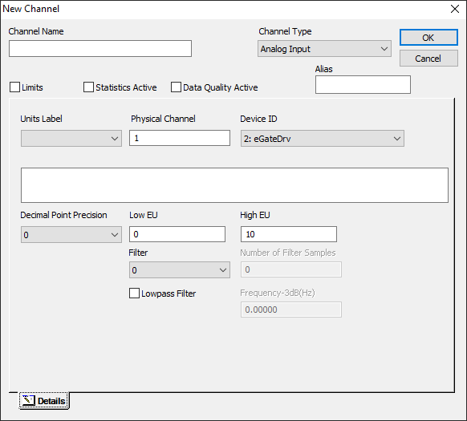
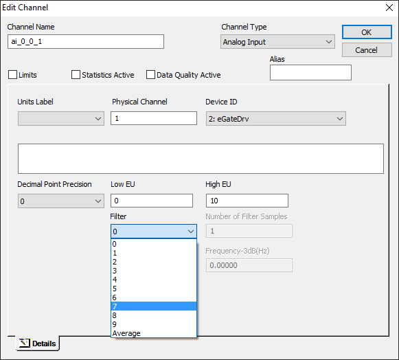
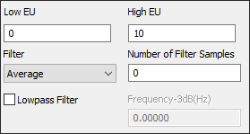

iTest User's Guide
The Analog Input filter is used to remove high frequency noise from channels. This is done by applying a software algorithm to the raw or calibrated values, as it is acquired by the hardware or brought into iTest. There are several different types of filters that can be selected in the channel editor. The channel editor is displayed in the following image; each option is described in the table below:
New Channel

Edit Channels

 |
NOTE: | The Average, Sliding, and the Lowpass Filter options are only visible in Test Manager if the device driver supports their use. |
The Number of Filter Samples field is enabled when the Average or Sliding option is selected:
Field Enabled

Edit Channel Dialog Descriptions
| Filter Type | Description |
| 0 - 9 | An exponential smoothing algorithm is applied. This algorithm combines a weighted average of the current measured value with the previous smoothed value: iTestValue = _X_ * NewMeasuredValue + _Y_ * Previous_iTestValue. X and Y are determined by the filter selection as follows: X = 1 / ((Filter Selection value * sqrt(samplerate/10)) ^2 ) Y = 1 - X. The sample rate is derived from the SystemScanRateHz powertek.ini setting. Newly measured values have less impact on the iTestValue when a higher numbered filter is selected. There is a trade-off between reducing noise (higher filter number) and reacting to change (lower filter number). |
| Average | An arithmetic function is carried out over several measured values to provide an averaged value. This results in the measurement rate decreasing and the resolution increasing. When using the Average filter, the Number of Filter Samples field is enabled. |
| Sliding | The filter calculates the average value over the last X number of measured values. This option enables the Number of Filter Samples field, as X is specified by this setting. The Sliding filter does not decrease the measurement rate. |
| Additional Fields | |
| Number of Filter Samples | This field is used to enter X number of averaging samples, to determine how many measured values are used to calculate one averaged value. |
| Lowpass Filter | A lowpass-filter ensures that only the low-frequency shares of the signals are evaluated. Higher-frequency photoelectric noise levels are not taken into account. The low-pass-filter is particularly suitable for noise suppression with slowly changing signal forms. |
| Frequency-3dB(Hz) | The cutoff frequency for the lowpass-filter. This determines the frequency beyond which signals are more heavily attenuated by the filter. |